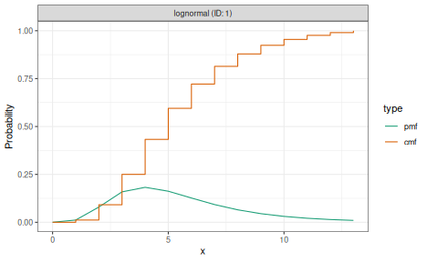
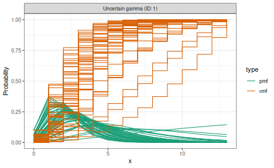
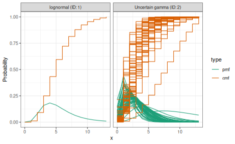
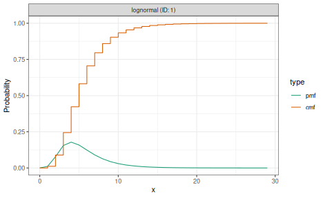

What delay distributions represent
Infectious disease surveillance data are shaped by delays between events that cannot be directly observed. The generation time is the interval between infection of a primary case and infection of a secondary case it causes. The incubation period is the time from infection to symptom onset. The reporting delay is the time from symptom onset (or another observable event) to the case appearing in surveillance data.
EpiNow2 uses these delay distributions when estimating the time-varying reproduction number and when producing forecasts and nowcasts. Each delay shifts and smooths the relationship between underlying infections and the observations available to analysts, so getting them right matters for inference.
Specifying delays
Delays are specified as dist_spec objects using the
distribution constructors LogNormal(),
Gamma(), Normal(), Fixed(), and
NonParametric(). Parameters can be given as fixed values or
with uncertainty expressed through Normal() priors on the
natural parameters.
library(EpiNow2)
#>
#> Attaching package: 'EpiNow2'
#> The following object is masked from 'package:stats':
#>
#> Gamma
# Fixed lognormal delay
incubation_period <- LogNormal(
meanlog = 1.6, sdlog = 0.5, max = 14
)
# Gamma delay with uncertain parameters
reporting_delay <- Gamma(
shape = Normal(3, 0.5),
rate = Normal(1, 0.25),
max = 14
)
# Fixed (delta) distribution for a known constant delay
fixed_delay <- Fixed(value = 3)
# Nonparametric distribution given directly as a PMF
# (zero-indexed: first element is P(delay = 0))
known_pmf <- NonParametric(c(0.0, 0.1, 0.4, 0.3, 0.2))We can visualise any dist_spec object using
plot().
plot(incubation_period)
plot(reporting_delay)
The max argument right-truncates the distribution at a
given value, discarding probability mass beyond that point and
renormalising. Alternatively, cdf_cutoff can be used to set
the truncation point based on a tail probability threshold.
When parameters carry uncertainty, EpiNow2 samples from the prior during fitting, propagating that uncertainty into the final estimates.
Why naive discretisation is biased
Delay distributions are often defined in continuous time, but surveillance data record events in discrete time windows (typically days). EpiNow2 operates at daily resolution, so both observation windows are set to 1 day. A common approach to discretisation is CDF differencing, where the probability mass for day is computed as . This treats the primary event as though it occurred at a known, exact time, typically the start of the interval.
In practice, both the primary event (e.g. infection) and the secondary event (e.g. symptom onset) are interval-censored. The primary event could have occurred at any point within its observation window. CDF differencing ignores this primary event censoring and introduces systematic bias, particularly for short delays where the censoring window is large relative to the delay itself[1,2].
Right truncation also introduces bias: recent events with long delays are systematically missing from surveillance data because the secondary event has not yet been observed.
How primarycensored corrects this
EpiNow2 computes delay PMFs using the
primarycensored package[3], which accounts for primary event
censoring explicitly. The approach integrates the delay CDF over all
possible primary event times within the primary window, producing an
adjusted CDF. The PMF is then obtained by differencing this adjusted CDF
at successive days.
For common distribution and primary event combinations (e.g. lognormal delay with uniform primary events), analytical solutions are available, making the computation fast. When no closed-form solution exists, numerical integration is used as a fallback.
The resulting PMF correctly represents the probability of observing a delay of days given that both events are recorded in daily intervals. This is the PMF used internally by EpiNow2’s Stan model when computing the likelihood.
Composing multiple delays
When the observation process involves more than one delay, the
individual delay PMFs are convolved to produce a combined delay. In
EpiNow2 this is done by adding dist_spec objects
together with the + operator.
# Combined delay from infection to report
combined_delay <- incubation_period + reporting_delay
plot(combined_delay)
The + operator signals to the model that these delays
should be convolved. The c() function, by contrast,
collects independent delay distributions without convolving them
(e.g. for separate delay and truncation distributions passed to
different parts of the model).
Convolution of nonparametric PMFs is performed directly in discrete space. For parametric distributions with uncertain parameters, the convolution is handled within the Stan model at each iteration of the sampler.
Truncation
Delay distributions must be truncated to a finite support for use in
the discrete-time model. Shorter distributions reduce the cost of the
convolution step in the model, so choosing a sensible truncation point
can noticeably improve run time. The max argument
right-truncates the distribution at a given value, discarding
probability mass beyond that point and renormalising. Alternatively,
cdf_cutoff sets the truncation point at the value where the
CDF reaches a given threshold.
# Long tail retained
dist_long <- LogNormal(meanlog = 1.6, sdlog = 0.5, max = 30)
# Truncated at a tighter bound
dist_short <- LogNormal(meanlog = 1.6, sdlog = 0.5, max = 14)
plot(dist_long)
plot(dist_short)
Right truncation is also important when estimating delay
distributions from real-time data, because recent cases with long delays
have not yet been observed. estimate_dist() accounts for
this; see vignette("estimate_dist") for the model
definition and vignette("estimate_dist_workflow") for a
worked example.
Left truncation excludes delays below a threshold, which is useful
when zero-day delays are epidemiologically implausible (e.g. generation
times). A NonParametric() distribution can encode this
directly by setting early entries to zero. For parametric distributions,
primarycensored handles left truncation analytically when
computing the adjusted CDF, so the resulting PMF already accounts for
the truncation without ad hoc zeroing and renormalising.
Fitting delay distributions from data
When line-list data with individual-level event dates are available,
estimate_dist() can be used to fit a delay distribution
that properly accounts for interval censoring and right truncation. See
vignette("estimate_dist") for the model definition and
vignette("estimate_dist_workflow") for a worked
example.